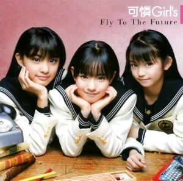
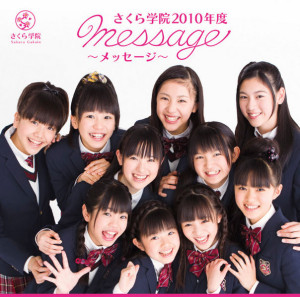

Antes de entrar en materia, un vídeo para los que no sepan de qué estamos hablando:
Veamos que tenemos aquí: Riffs más bien pesados, solos como dictan las leyes de metal y una base rítmica machacona. Eventuales guturales y un componente electrónico más bien agresivo. Una escenografía propia de un grupo metalero con presupuesto. Niñas vestidas de lolitas góticas cantando al más puro estilo J-Pop con coreografías que mezclan azotes en el culo y corazoncitos. Y lo más importante, las huestes del metal flipando con esta canción:
¡Dame chocolate!
¡Dame chocolate!
Yo no. No, no, no
Nunca, nunca, nunca
Mirando el chocolate.
¿Puedo tomar un poco de chocolate?
¡Pero espera un momento! ¡Espera, espera, espera!
¡Dame!
¡Dame chocolate!
Ya, ya, ya, ya
Nunca, nunca, nunca
Mirando el chocolate.
Puedo coger un poco de chocolate, ¿no?
Pero mi peso me preocupa un poco estos días.
ETC. ETC.
¿Cómo hemos llegado a este punto? ¿Qué nos hemos perdido para que en 2014 seamos sorprendidos por semejante fenómeno? ¿Qué está pasando aquí?. Veamos primero un poco algunos conceptos que pueden ser pocos habituales para los contextos en los que solemos movernos en SBS:
En Japón es común el fenómeno idol, que básicamente consiste en coger a una o varias actrices o cantantes monas (kawaii, que dirían ellos), y pasearlas por revistas, videoclips, programas de TV, cajas de quesitos o dónde sea, a veces con un aire erótico, otras veces más inocente. Vendrían a ser un poco las tías buenas de moda que terminas viendo hasta la náusea en series, portadas de revistas pajilleras rollo FHM o pelis españolas para adolescentes pero con todo ese componente sexual farrogoso imperante en Japón. Todo esto obviamente es un negocio, y hay compañías que se dedican a reclutar chicas para montar diversos grupos en los que estas van entrando y saliendo como si de unas versiones kawaii de la Liga de la Justicia se tratase.
En este complejo submundo entran Amuse, una compañía dedicada a ello que tiene un grupo de chicas que van cambiando de cuándo en cuándo llamado Sakura Gakuin (traducido: Academia de la Floración de la Cereza) y que además se dividen en otros subgrupos temáticos. Y como os podéis imaginar en semejante cacao surgen Babymetal. Éstas son ellas listas a conquistar el trono de metal:
Y aquí vemos a SU-METAL en uno de sus anteriores proyectos, dónde desde luego no hizo su mierda más dura:

Y lo mismo podemos decir de MOAMETAL y YUIMETAL, una foto que se hicieron con su grupo de colegialas;

De hecho, de la misma compañía, tenemos grupos musicales de cocina (¿?¿?¿?):
O de ciencia (¿?¿?¿?¿?¿?¿?):
https://www.youtube.com/watch?v=8dypEW0hARM
Todo un universo así te hace pensar en dos cosas: 1) la cantidad de mierda que tienen que llegar a procesar los críos japoneses para que todo esto resulte rentable y 2) que obviamente Babymetal son una cosa que a priori es más falsa que un SBSToday. Pero obviamente ésto no era un secreto, pues sólo hay que ver extractos de algunas de las entrevistas que les hacen:
– ¿Cómo os interesasteis en el metal? ¿Qué bandas de metal os inspiran?
– Entramos en contacto con el metal por primera vez cuando empezamos con BABYMETAL. Hemos estado estudiándolo, es un mundo completamente nuevo.
Pero ojo, que con todo esto no quiero menospreciar a Babymetal. De hecho me parecen una auténtica genialidad. ¿Pero qué hace a Babymetal tan especial? ¿Cuál es la razón por la que en nuestro foro y otros muchos, siempre listos para hundir cualquier cosa que no sea TRVE, está rendido a los encantos de estas mozas? ¿Por qué no se leen más que comentarios hoygan-metaleros del tipo “No sé si me gusta mucho, o no me gusta, debo ser idiota pero no puedo parar de ver videos de ellas jajajajaj”?. Básicamente porque son un producto comercial que roza casi lo perfecto, y cuyas claves me parecen las siguientes:
El disco de Babymetal realmente está bien
En serio. Obviamente no creo que aparezca en ningún top, ni que se vayan a convertir en unas leyendas de metal, pero esta hecho con el suficiente gusto como para no ser una simple anécdota. Lo dice alguien que detesta el rollo J-Pop, pero hay que reconocer que los temas son variados, tiene mil bizarradas donde se dedican a coquetear con géneros que no pegan ni con cola (rap, dubstep o reggae) o con momentos de bailoteo Dance Dance Revolution sin caer en lo vergonzoso, y al final el juego de voces termina molando. Y coño, que los riffs molan, y los solos más metal-caspa también.
Si hemos dado dieces a Bring Me The Horizon o defendemos a Enter Shikari, no sé por qué no deberíamos apoyar con el mismo tesón a Babymetal.
Todos queremos ser sus padres
Porque en el fondo, aunque no estemos preparados ni para llevar una web como ésta y aunque algunos no lo creáis posible, algún día algún miembro del staff tendrá críos. E incluso vosotros. Y algunos tendremos NIÑAS. Y querremos que esas niñas sean como las crías que hacen los grititos de Babymetal, con sus adorables coreografías llenas de cuernitos. Yo lo tengo claro, si tengo una hija prefiero que haga el monguer de esta manera antes de ser una apestosa cría que da vueltas como David Bisbal. Pensadlo. No os sintáis culpables si se os cae la baba cuando rompen un rapeo cutre chillando “Are you ready to mosh?”.
En directo molan
Veamos. Soportamos a grupos como Kylesa con discos superproducidos y directos de mierda. A Brent Hinds de Mastodon haciendo el sonido de un gato atropellado en vivo. Babymetal al lado de todo esto es la hostia, con un show a la altura de cosas como Rammstein:
https://www.youtube.com/watch?v=S5e0jUmtMyU
Incluso aunque hagan playback (que no lo sé) tiene su mérito. ¡Aprended The Knife, que al lado de estas muchachas sois LA MIERDA!
Babymetal llevan un rollo pseudo sexual muy extraño
Que el Dios Zorro que adoran las muchachas estas me salve de sentir algún tipo de atracción física por unas menores, pero todos sabemos que en Japón hay un rollo muy ambiguo sobre el asunto (busquen en Google que es el lolicon y pregúntense qué cojones le pasa a los japoneses por enésima vez en su vida). Y obviamente Babymetal, aún con su aparente estética inocente, juegan un poco con ello (como cualquier producto idol). No sólo eso, sino que uno no puede evitar pensar que cosas como la coña que se traen de usar collarines de hacer tanto headbanging no tiene que ver un poco con fetiches médicos, que es todo un mundo. De hecho lo primero que te encuentras en Google a buscar “medical eyepatch” es esto:
¿Lo veis ahora?
Y si no me creéis que Babymetal puedan llegar a resultar morbosas, os invito a entrar en 4chan y ver cuanto tardáis en encontrar alguna foto de Babymetal lefada. Si lo pedís en /b/ no creo que os lleve mucho rato.
Son un producto hecho a medida para los frikis otakus metaleros
No subestiméis un segmento de mercado que hace que cientos de mangas de mierda sean rentables.
El mejor videoclip en formato “grupo flipándolo delante de la cámara” de la historia
En SuicideByStar tenemos fama de ser unos quisquillosos y unos criticones con las mierdas comerciales, y no voy a ser yo el que lo niegue o diga que esté mal. Pero remarco ésto, con las MIERDAS comerciales. Queda demostrado en este artículo que Babymetal son seguramente la cosa más comercial de la que se ha hablado en esta web, dejando a Linkin Park al nivel de una banda crustie libanesa. Pero no pasa nada: si lo comercial está hecho desde el respeto, con calidad y desde un punto visto de fresco creo que también deberíamos de ser los primeros en indicarlo. Quizás lo exótico de Babymetal nos haga llegar fácil a ese punto, pero no deja de ser una reflexión que más de una vez nos deberíamos plantear cuando nos dedicamos a flamear en foros sobre si algo es más o menos auténtico y reducir su calidad a ello.
QUE EL DIOS ZORRO SALVE A BABYMETAL
https://www.youtube.com/watch?v=88hU078nUQs
Apoyános